Cap. 1 Sistema Digestório — Visão Geral e Trato Superior
• Digestão mecânica — fragmentação física (mastigação, peristaltismo)
• Digestão química — quebra de moléculas por enzimas e sucos digestivos
Digestão Simples
- Digestão e absorção no mesmo compartimento
- Ex: protozoários, esponjas, planárias
Digestão Complexa (humanos)
- Sistema com órgãos especializados
- Digestão e absorção em locais distintos
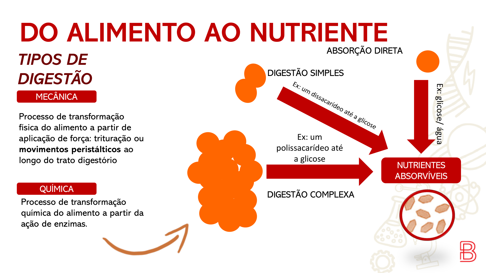
Trato Gastrointestinal — em ordem
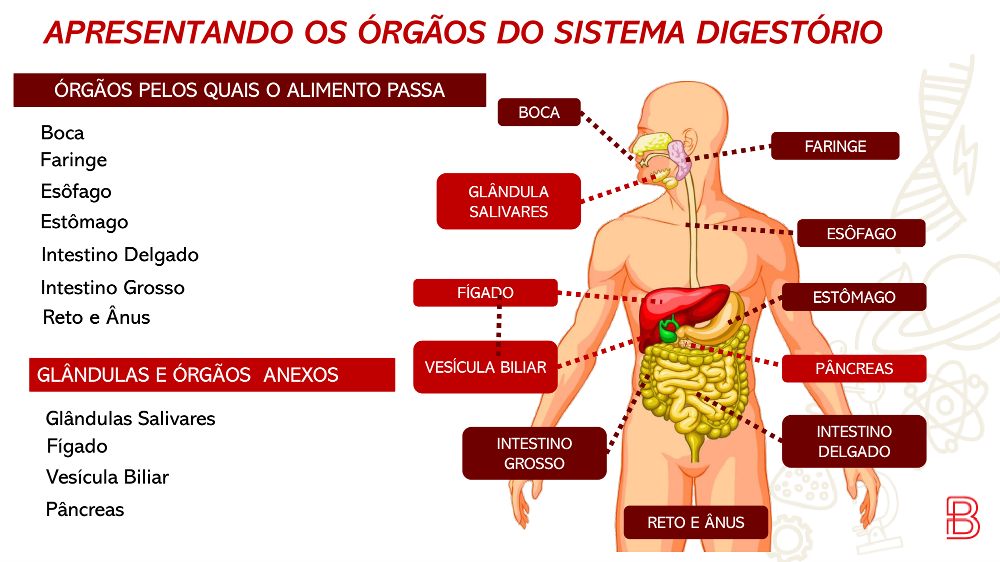
Órgãos Anexos (auxiliam sem fazer parte do trato)
- Glândulas salivares — produzem saliva com ptialina (amilase salivar)
- Fígado — produz bile (emulsificante de gordura)
- Vesícula biliar — armazena e concentra a bile
- Pâncreas — produz suco pancreático (enzimas + bicarbonato)
pH: ~7,0 (neutro)
Ptialina (Amilase Salivar)
- Produzida pelas glândulas salivares
- Substrato: amido (polissacarídeo)
- Produto: maltose (dissacarídeo) — NÃO absorvível
- Ação interrompida no estômago (pH ácido desnatura a ptialina)
- Proteínas e gorduras não são digeridas na boca
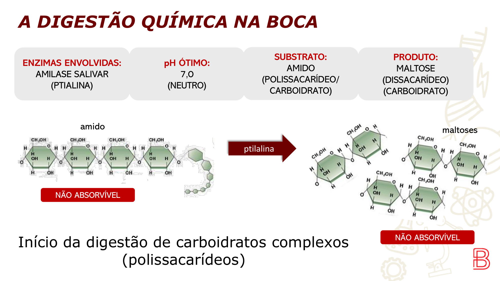
Faringe
- Cruzamento das vias aérea e digestiva
- Reflexo de deglutição: epiglote fecha a traqueia para o alimento ir ao esôfago
- Não realiza digestão química
Esôfago
- Tubo muscular que conecta faringe ao estômago
- Peristaltismo = ondas de contração do músculo liso que empurram o bolo alimentar
- Não realiza digestão química nem absorção
O alimento misturado ao suco gástrico vira quimo — pH ~2 (muito ácido).
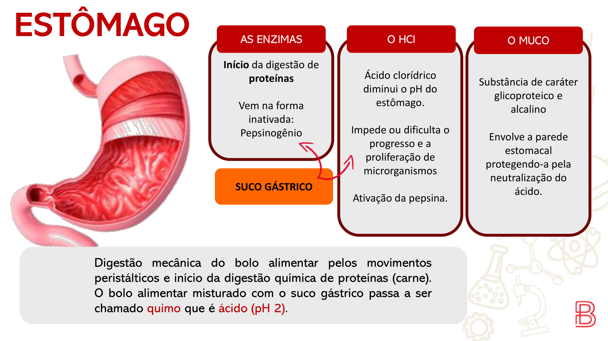
Componentes do Suco Gástrico
- HCl (ácido clorídrico) — acidifica para pH~2, ativa a pepsina, destrói microrganismos
- Pepsinogênio (inativo) → ativado pelo HCl → Pepsina (ativa)
- Muco — protege a parede gástrica do ataque do HCl e da pepsina
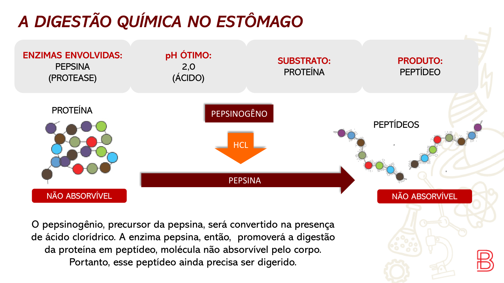
Cap. 2 Intestino Delgado — Duodeno, Jejuno e Íleo
• Bile (do fígado/vesícula biliar via ducto colédoco)
• Suco pancreático (do pâncreas)
• Suco entérico (produzido pelo próprio duodeno)
É aqui que a digestão química atinge capacidade máxima e a maioria das moléculas chega ao estágio absorvível.
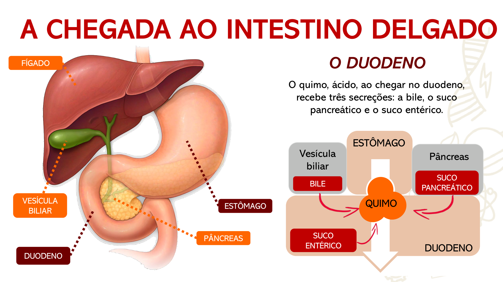
Bile — Emulsificação de Gorduras
- Produzida no fígado, armazenada na vesícula biliar
- Lançada no duodeno pelo ducto colédoco
- Sais biliares emulsificam gorduras: dividem grandes glóbulos em gotículas (maior área para a lipase agir)
- Bile NÃO contém enzimas — é um emulsificante físico, não um catalisador
- Neutraliza o quimo ácido vindo do estômago (ambiente passa para pH ~8)
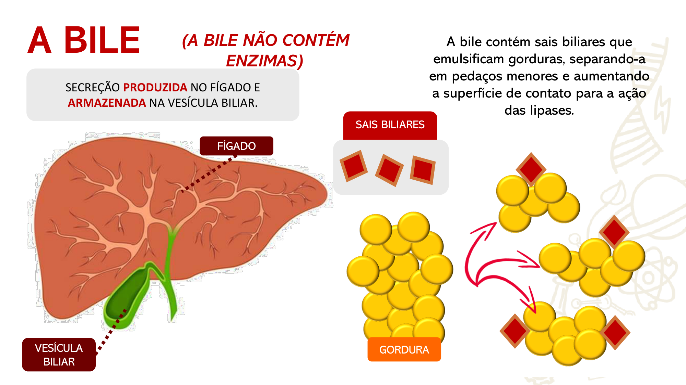
Suco Pancreático
- Bicarbonato — neutraliza o quimo ácido (pH ~8)
- Tripsinogênio (inativo) → ativado pela enteroquinase → Tripsina + Quimiotripsina: proteínas/peptídeos → peptídeos menores
- Amilase pancreática — amido → maltose
- Lipase pancreática — lipídeos (emulsificados pela bile) → ácidos graxos + glicerol (ABSORVÍVEIS)
- RNAse / DNAse — ácidos nucleicos → nucleotídeos (não absorvíveis ainda)
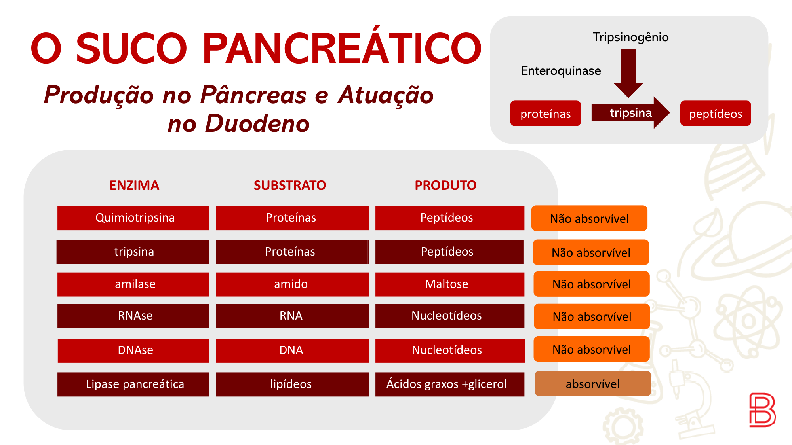
Suco Entérico (produzido pelo duodeno)
- Enteroquinase — ativa o tripsinogênio → tripsina
- Peptidases — peptídeos → aminoácidos (ABSORVÍVEIS)
- Maltase — maltose → glicose + glicose (ABSORVÍVEIS)
- Sacarase — sacarose → glicose + frutose (ABSORVÍVEIS)
- Lactase — lactose → glicose + galactose (ABSORVÍVEIS)
- Deficiência de lactase = intolerância à lactose
- Nucleotidase — nucleotídeos → pentoses + bases nitrogenadas + fosfato (ABSORVÍVEIS)
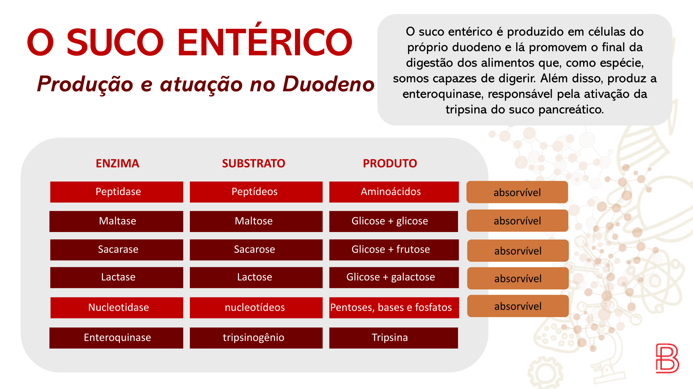
| Local | Enzima / Suco | Substrato | Produto | Absorvível? |
|---|---|---|---|---|
| Boca | Ptialina (amilase salivar) | Amido | Maltose | NÃO |
| Estômago | Pepsina (ativada por HCl) | Proteínas | Peptídeos | NÃO |
| Duodeno | Bile (emulsificante) | Gordura | Gotículas (emulsão) | NÃO (físico) |
| Duodeno | Lipase pancreática | Lipídeos | Ác. graxos + Glicerol | SIM |
| Duodeno | Amilase pancreática | Amido | Maltose | NÃO |
| Duodeno | Tripsina / Quimiotripsina | Proteínas / Peptídeos | Peptídeos menores | NÃO |
| Duodeno | Peptidases (suco entérico) | Peptídeos | Aminoácidos | SIM |
| Duodeno | Maltase | Maltose | Glicose + Glicose | SIM |
| Duodeno | Sacarase | Sacarose | Glicose + Frutose | SIM |
| Duodeno | Lactase | Lactose | Glicose + Galactose | SIM |
| Duodeno | RNAse / DNAse | Ácidos nucleicos | Nucleotídeos | NÃO |
| Duodeno | Nucleotidase | Nucleotídeos | Pentoses + bases + fosfato | SIM |
Estruturas que Ampliam a Superfície de Absorção
Vilosidades (nível de tecido)
- Dobras da mucosa intestinal
- Visíveis a olho nu
- Contêm capilares sanguíneos (aminoácidos, glicose) e vasos quilíferos (ác. graxos)
Microvilosidades (nível celular)
- Projeções da membrana de cada enterócito
- Sustentadas por microfilamentos de actina
- Formam a "borda em escova"
Juntas, ampliam a superfície em até 600× o comprimento tubular do intestino.
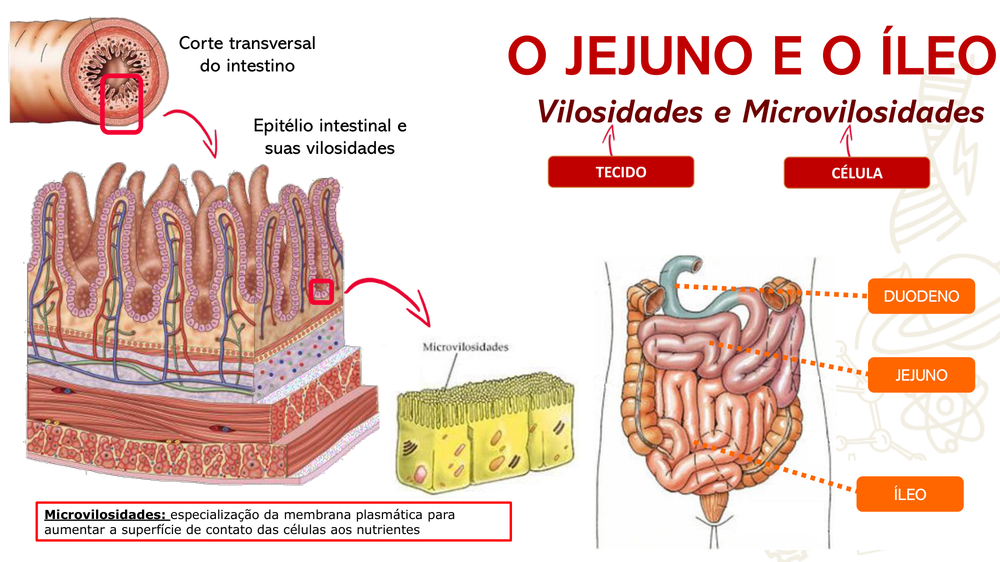
Cap. 3 Intestino Grosso — Microbiota, Água e Fezes
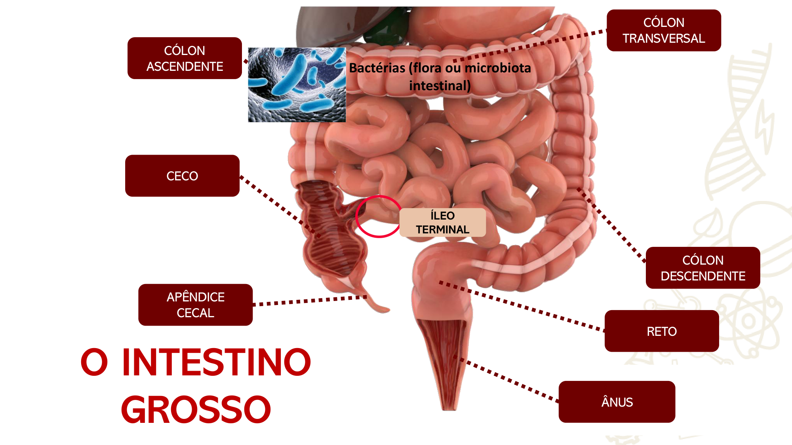
Partes do Intestino Grosso
- Ceco — bolsão inicial onde o íleo desemboca; apêndice vermiforme está aqui
- Cólon ascendente → Cólon transverso → Cólon descendente
- Reto — armazena as fezes temporariamente
- Ânus — eliminação (esfíncter externo voluntário)
Absorção de Água e Sais
- Absorção de água e sais minerais por osmose
- O quilo vai sendo concentrado até formar fezes sólidas
- Composição das fezes: 3/4 água · 1/4 sólido (células mortas, bactérias, fibras indigeríveis)
Constipação = fezes ressecadas (passagem lenta → absorção excessiva de água).
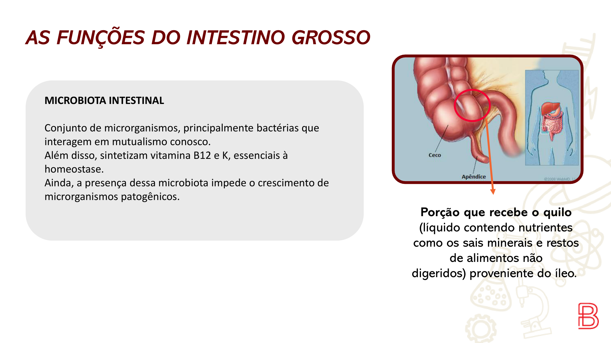
O que a Microbiota Faz por Nós
- Produz vitamina B12 e vitamina K (essenciais ao metabolismo humano)
- Exclusão competitiva — ocupa nichos impedindo colonização por patógenos
- Auxiliam na fermentação de fibras solúveis
- Modulam o sistema imunológico intestinal
Fibra Insolúvel — Celulose
- Não se dissolve em água
- Indigerível (sem celulase humana)
- Aumenta o bolo fecal
- Acelera trânsito intestinal
- Ex: farelo de trigo, folhas
Fibra Solúvel — Pectina
- Dissolve-se formando gel
- Fermentada pela microbiota
- Retarda absorção de glicose e colesterol
- Alimenta a microbiota (prebiótico)
- Ex: maçã, aveia, feijão
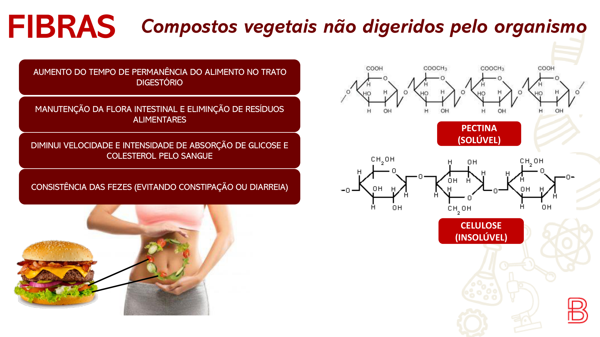
Cap. 4 Transportes de Membrana
Transporte Ativo — contra o gradiente de concentração, com gasto de ATP
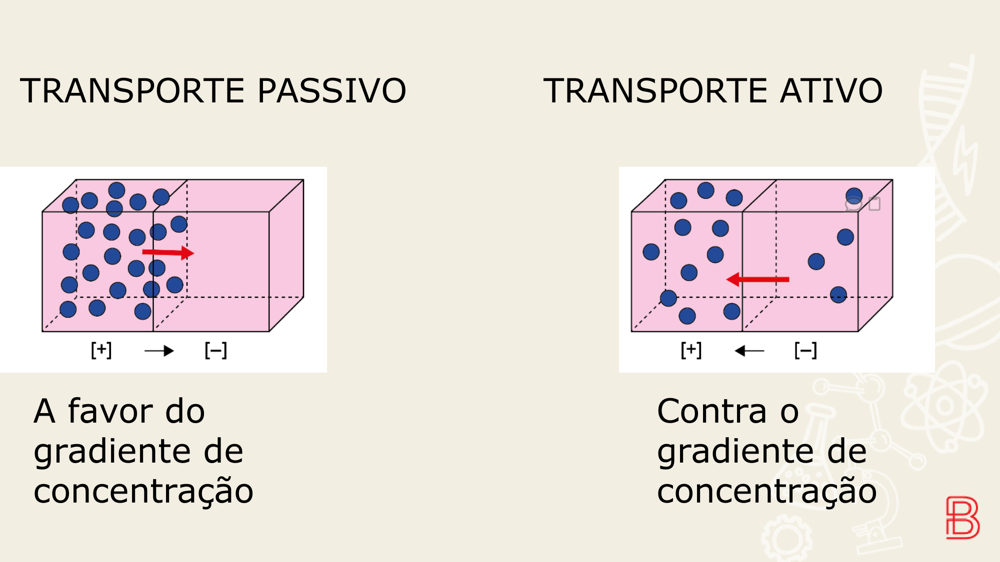
ATIVO → Bomba Na⁺/K⁺ Endocitose Exocitose
Difusão Simples
- Diretamente pelos fosfolipídios
- Moléculas apolares e/ou pequenas
- Sem proteínas transportadoras
- Ex: O₂, CO₂, N₂ (gases), ácidos graxos, vitaminas A, D, E, K
Difusão Facilitada
- Via proteínas transportadoras
- Moléculas polares e/ou grandes
- Canal (poro) — íons (ex: Ca²⁺, K⁺)
- Carreadora — muda conformação (ex: glicose via GLUT, aminoácidos)
- Ainda passivo — sem ATP
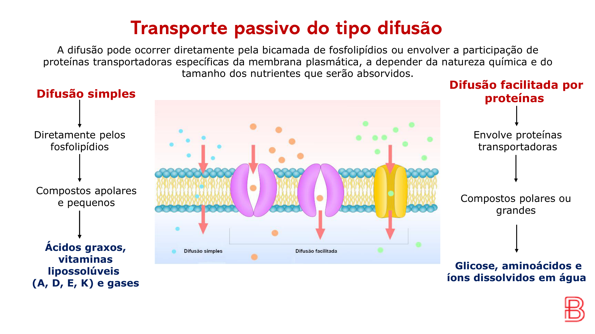
Água é polar, passa lentamente pela bicamada. Em grandes volumes, usa aquaporinas (proteínas canal de água — ainda passivo).
Tipos de Solução
- Isotônica — mesma concentração do interior → sem troca líquida
- Hipotônica — menos solutos que o interior → célula ganha água
- Hipertônica — mais solutos que o interior → célula perde água
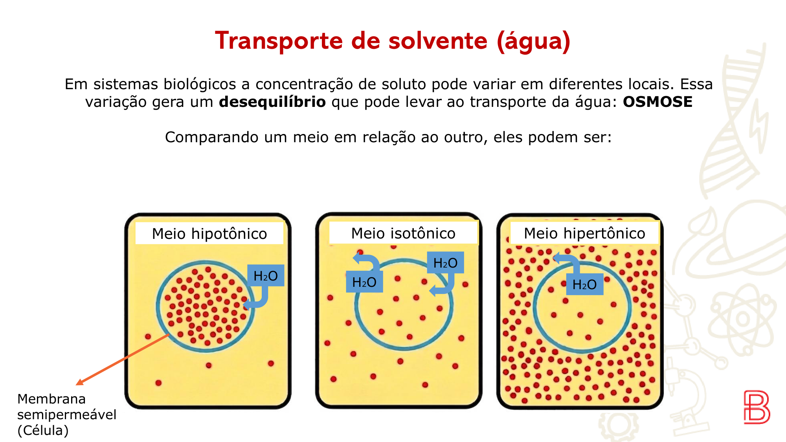
Consequências em Célula Animal vs Vegetal
Célula Animal (sem parede celular)
- Hipertônica → perde água → crenação (enrugada)
- Isotônica → normal
- Hipotônica → ganha água → lise (estoura)
Célula Vegetal (com parede de celulose)
- Hipertônica → perde água → plasmólise (membrana descola da parede)
- Isotônica → flácida
- Hipotônica → ganha água → turgescente (parede impede a lise)
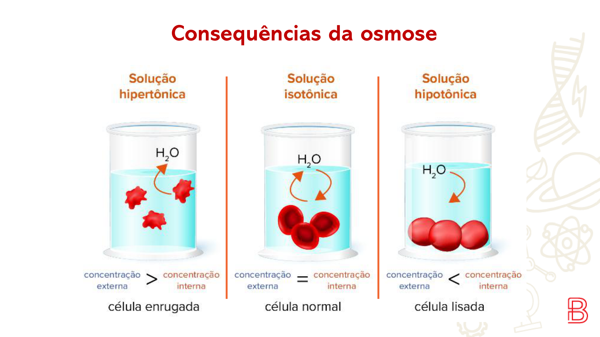
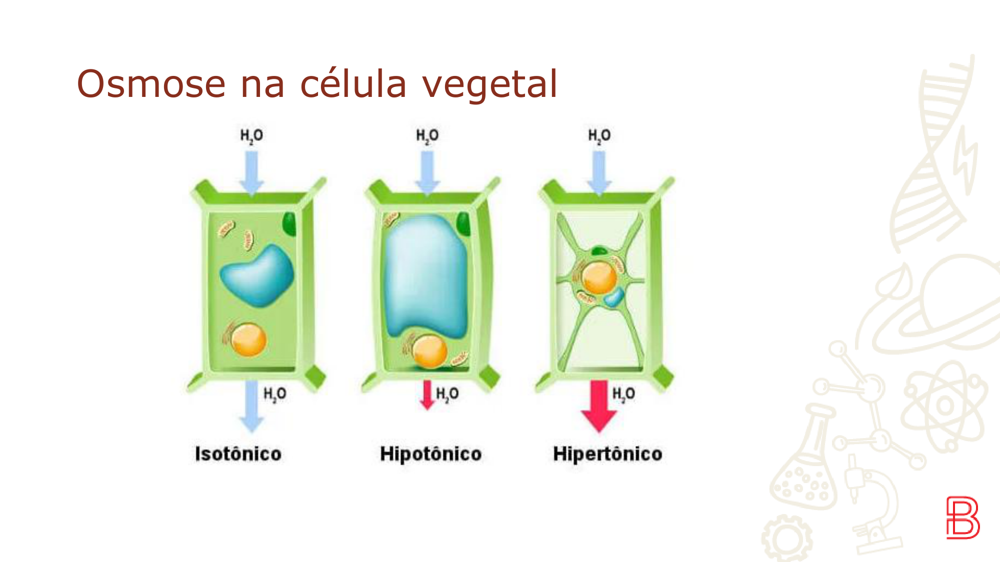
Bomba Na⁺/K⁺-ATPase
- Usa ATP para bombear 3 Na⁺ para FORA e 2 K⁺ para DENTRO
- Ambos contra seus gradientes (ativo)
- Mantém potencial de membrana (interior mais negativo)
- Fundamental para neurônios e músculo cardíaco
Transporte por Vesículas (também ativo)
- Endocitose — internalização:
- Fagocitose — sólidos grandes, com pseudópodes (macrófagos, neutrófilos)
- Pinocitose — líquidos, por invaginação
- Exocitose — liberação:
- Secreção — substâncias úteis (hormônios, enzimas, anticorpos)
- Clasmocitose — resíduos indigeríveis
Lúmen → enterócito → capilar sanguíneo
• Ácidos graxos e vitaminas lipossolúveis → difusão simples (apolares)
• Glicose, aminoácidos, íons → difusão facilitada (proteínas transportadoras)
| Tipo | Mecanismo | ATP? | Direção | Exemplos |
|---|---|---|---|---|
| Difusão Simples | Pelos fosfolipídios | NÃO | Favor do gradiente | O₂, CO₂, ác. graxos, vit. A, D, E, K |
| Difusão Facilitada | Proteína canal ou carreadora | NÃO | Favor do gradiente | Glicose (GLUT), aminoácidos, Ca²⁺, K⁺ |
| Osmose | Fosfolipídios / aquaporinas | NÃO | Hipotônico → Hipertônico | H₂O |
| Bomba Na⁺/K⁺ | Proteína ATPase | SIM | Contra o gradiente | Na⁺ (saída) / K⁺ (entrada) |
| Fagocitose | Pseudópodes + vesícula | SIM | Entrada (sólidos) | Bactérias, restos celulares |
| Pinocitose | Invaginação + vesícula | SIM | Entrada (líquidos) | Fluido extracelular |
| Exocitose (secreção) | Fusão de vesícula com membrana | SIM | Saída | Insulina, enzimas, anticorpos |
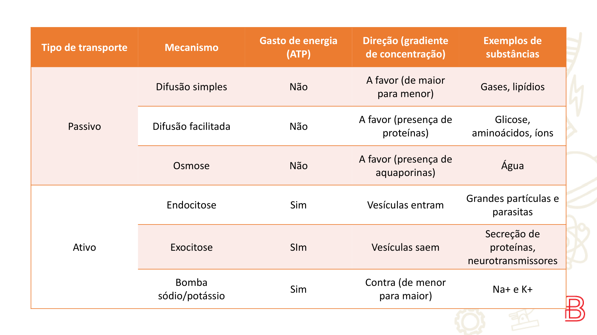
Quiz — AE 27/05/2026
12 questões · Sistema Digestório e Transportes de Membrana
1. A ptialina (amilase salivar) transforma amido em maltose na boca. Por que essa digestão é interrompida ao chegar ao estômago?
2. A pepsina é secretada pelo estômago na forma inativa de pepsinogênio. Por que esse mecanismo de pró-enzima existe e o que o ativa?
3. Uma estudante afirma: "A bile digere as gorduras no intestino". Qual é o erro e qual é a função correta da bile?
4. Pessoas com intolerância à lactose carecem da enzima lactase. Qual seria a consequência da ingestão de leite e em que parte do trato o problema se manifesta?
5. O pâncreas secreta tripsinogênio (inativo). A enteroquinase, produzida pelo duodeno, o ativa → tripsina. Por que esse mecanismo de pró-enzima é importante?
6. O intestino delgado tem ~6 m de comprimento, mas a área de absorção real é muito maior. Quais estruturas explicam esse ganho e como se diferenciam entre si?
7. O uso prolongado de antibióticos de amplo espectro frequentemente causa diarreia e candidíase (infecção por Candida). Como a destruição da microbiota explica ambos os efeitos?
8. O intestino grosso absorve água por osmose acoplada à absorção de sódio. Se uma toxina bacteriana bloqueasse os transportadores de Na⁺ do cólon, qual seria a consequência sobre as fezes?
9. Vitaminas A, D, E e K são absorvidas por difusão simples, enquanto a glicose precisa de difusão facilitada. O que determina qual via cada molécula usa?
10. Uma hemácia e uma célula vegetal são colocadas em água destilada (solução hipotônica). Qual é o destino de cada uma e por quê diferem?
11. A bomba Na⁺/K⁺ bombeia 3 Na⁺ para fora e 2 K⁺ para dentro usando ATP. Por que esse processo é transporte ativo e não difusão facilitada?
12. Um pesquisador bloqueia todas as proteínas carreadoras da membrana dos enterócitos. Quais nutrientes ainda seriam absorvidos e quais não seriam?